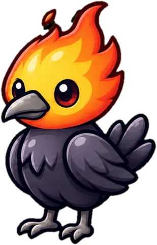

 Fire
Fire Wind
WindTap a stage to read its story.
Sparkbeak is a round, coal-black chick with a blazing orange-red flame-crest sprouting from the top of its head like a lit torch. Its beak is stout and yellow-orange, and it raises tiny wings barely wider than a hand. In the Amber Desert it perches on heat-cracked boulders and crows at the sunrise, broadcasting warmth across the dunes. The guardians say a desert sunrise isn't real until a Sparkbeak cries it in.
Field note: Sparkbeak's flame-crest doubles in height on days when a hot desert wind is building - a reliable weather sign.
Amber Desert. Sparkbeak and its family are found in the Amber Desert. See everyone who lives there.
Share a Bond Food that matches its types to become friends. Sparkbeak loves:
A Bond Food is not a trick. It joins your spirit with the Kimuro's spirit, and only when it chooses you.
Print the Kimuro adventure packs: mazes, cards, a board game and Bond Mark medals.
See the printable packs